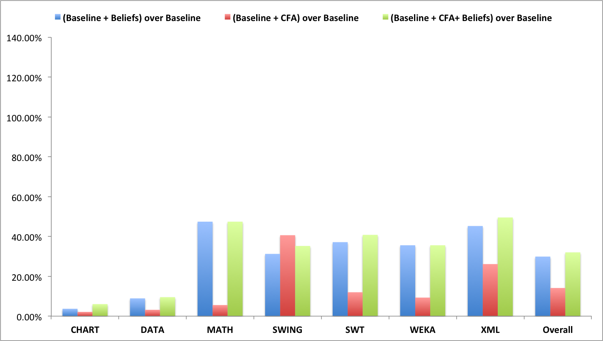
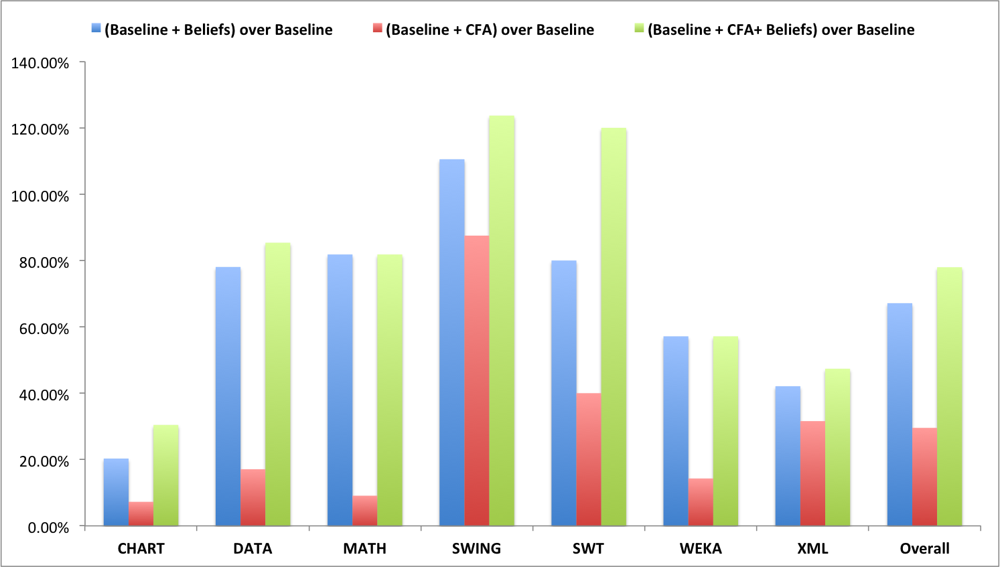

Overall, our approach with six implemented implicit beliefs and 1-level control flow analysis (1-CFA) improves the precondition inference result in terms of precision and recall. In this section we analyze the eectiveness of each component individually. Table 4 show the improvements of each component in precision and recall, respectively. In general, every component helps improve the recall of the usage-based approach. The improvement could be as high as 110% with count-controlled loop on SWING. Most of the times, every component also helps improve the precision except for the 4 cases of three components on SWING and OIC component on DATA. Over the libraries, XML and SWT benet the most in both precision and recall. Now, let us present detailed results of two components CCL and OIC which are representative for two trends: improving in both precision and recall, and improving in recall with some decrease in precision, respectively.
Count Controlled Loop (CCL)
This result shows the trend that we observed by some of the components when we gain in both precision and recall. This component observes the loop variant to infer the loop invariant and propagate this belief as a precondition. The result in Figure 11 shows that in terms of the precision we achieved 2%–45% relative improvement and in terms of recall 2%–111% relative increase for CHART, DATA, MATH, SWING, SWT, WEKA libraries. The component count controlled loop deduces implicit belief related to the upper or lower bound of the loop. This helps to infer loop invariant preconditions and increases the recall as seen in the result. We also achieve the improvement in terms of precision because the tool only mined true positive conditions and did not introduce new false positives. The result on XML was not improved compared to base case as the APIs of interest for this library were not called inside a count controlled loop in our dataset. We have observed that most APIs from this library were called inside condition-controlled loop if loop is involved, which is out of context for this component.
Object Instance Creation (OIC)
Once an object is instantiated with a constructor it becomes a non-null entity. These type of implicit belief generates non-null related preconditions. The expectation is to get more preconditions that indicates a component of the API could be non-null. Figure 12a shows that precision is increased by 2%–34% whereas Figure 12b shows recall increased by 7%–42% for CHART, SWT, WEKA and XML libraries. Addition of more true positive preconditions attains better recall and it helps increase the precision as well. In case of libraries DATA, SWING we see a decrease in precision by 1% and 9% respectively. The reason behind this is mining false positive conditions related to some APIs. We have examined such false positives and came to the conclusion that these false positives are stronger conditions than necessary, e.g. an API Document.insertString(int, String, AttributeSet) from the text package of SWING library permits insertion of a null string. However, from a programmer’s point of view it is logical to send a non-null string to insert into a document. In terms of recall both libraries DATA and SWING have an increase of 10% and 5%, respectively. In case of the MATH library we do not see any improvement for this component. This is because the APIs from this library that we observed do not have any null-related preconditions.
Type Comparison (TC)
If an object is checked whether it is instance of some class and returns true, then that object is non-null. Using this implicit belief to mine more preconditions, we see a similar trend in terms of accuracy that we observed in object instance creation (OIC) component. For some libraries the precision is decreased due to mining stronger conditions than required. Recall improves for all libraries if the libraries themselves are expecting any non-null related precondition. The accuracy of this component is shown in following figure through bar charts.
Null Derefrence (ND)
If an object is dereferenced and then used by an API, that object must be non-null. The preconditions that stems from this implicit belief increased recall for the chosen libraries if the library anticipates non-null preconditions. In terms of precision we see a slight drop for two libraries as the tool mines stronger non-null related preconditions. Again we see a similar trend as in other non-null implicit belief related component in the result in terms of accuracy. The accuracy of this component is shown in following figure through bar charts.
Short Circuit Evaluation (SCE)
In short circuit evaluation, the evaluation of the second operands implies a specific value of the first operand. Using this to mine preconditions for APIs that act as an operand in such expressions we achieved increase in precision and recall for all libraries. The result follows the trend of previous component and accuracy is shown in the following figure through bar chart.
Local Exception (LE)
If a client code throws a client-specific exceptions before calling an API, then the explicit guard condition is irrelevant to the API. This implicit belief can help in removing false positive conditions from the existing mining based approach, thus, can increase the precision. In Figure 16, we see the relative peak in precision for 6 libraries libraries by 2%–23%. SWING achieves the same result as the base approach, as the tool could not detect any client-specific exceptions from the usages. Inspecting the call sites, we have seen that although client-specific conditions were present in the code corpus we have used, those conditions do not guard any client specific exceptions. As a result, the tool was not able to detect such noise for SWING library. Table 4 shows that there is no increase in recall which is expected as this implicit belief aims to remove false positives only. The result also confirms that we have not removed any true condition as there is no decrease in recall.
1-Level Control Flow Analysis (1-CFA)
If a parameter of a procedure is directly passed to an API, the existing mining approach cannot mine precondition for that API due to absence of calling context. Performing single level context sensitive analysis to infer preconditions for such cases can benefit in mining more preconditions. This component takes advantage of both implicit belief related conditions and explicit conditions from the caller methods if such conditions are within context. All libraries of interest shows rise in terms of both precision and recall. The detailed result is shown in Figure 17.

(a) Relative improvement in precision |

(b) Relative improvement in recall |